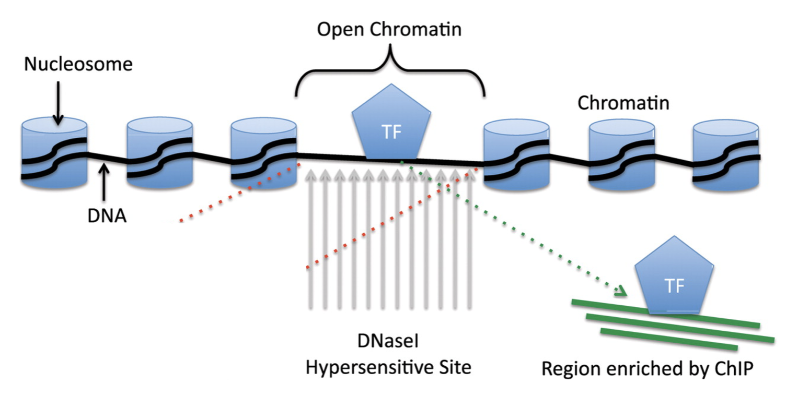
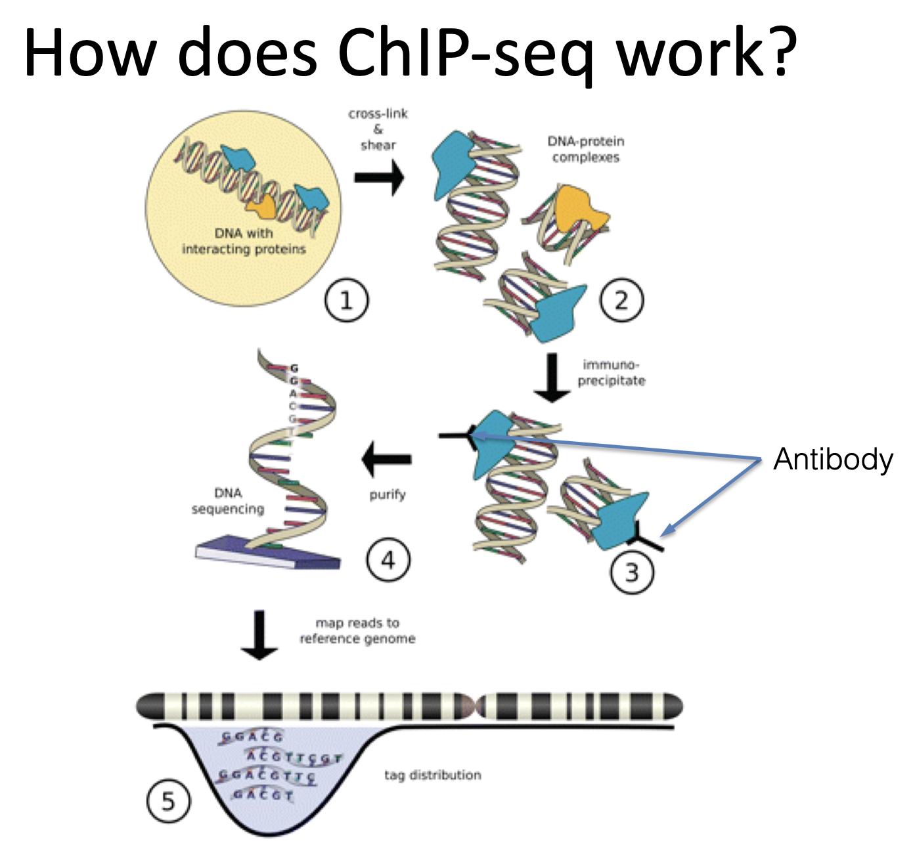
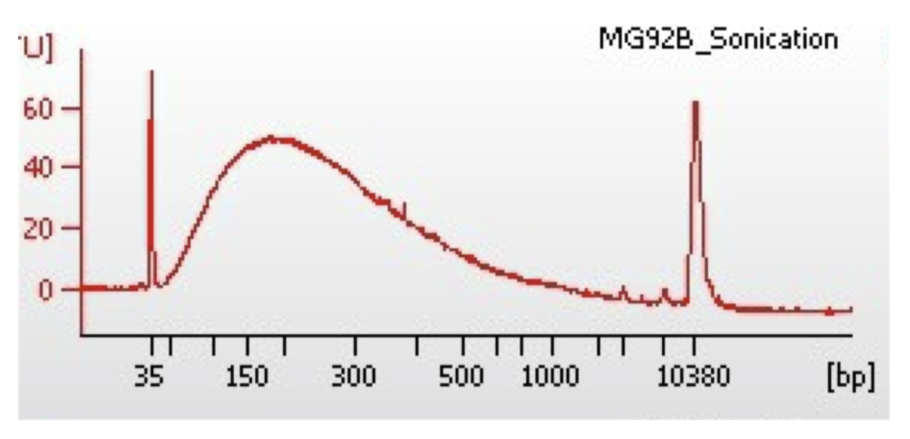
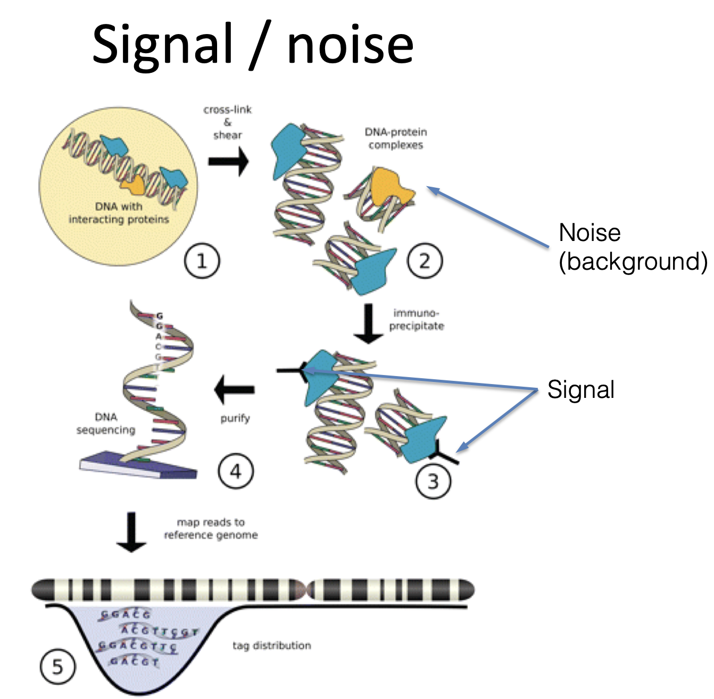
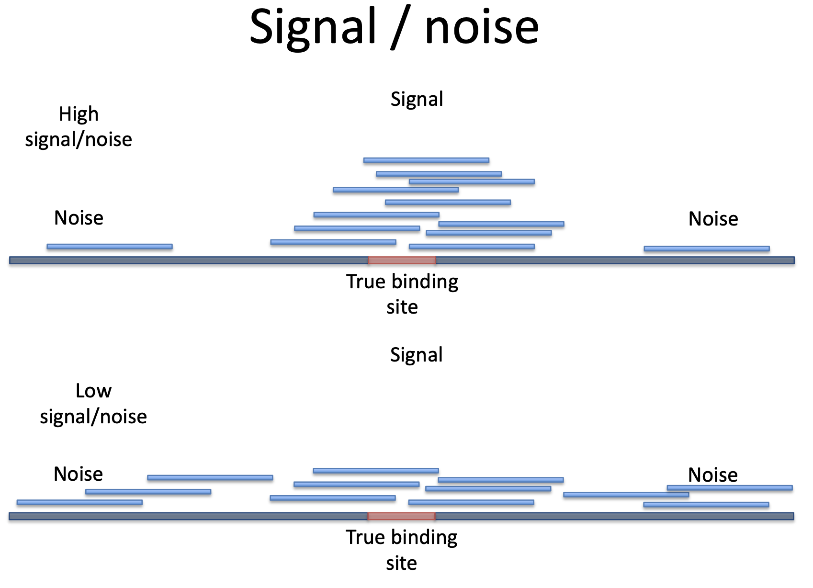
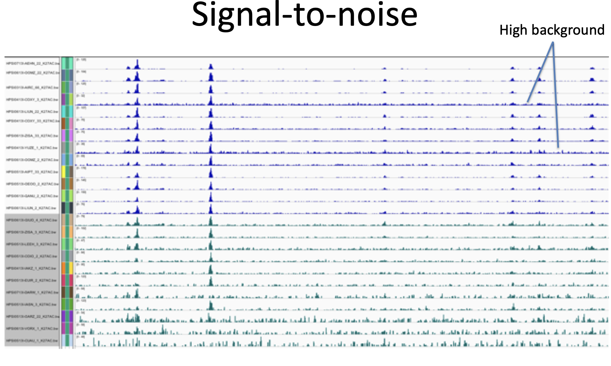
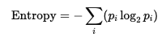

Manual
Transcriptional Regulation and Chromatin Interactions

Transcriptional regulation in eukaryotic cells is a dynamic process governed by the interaction between DNA and specific regulatory proteins, most notably transcription factors (TFs). These proteins recognize and bind to specific DNA sequences, typically located in accessible regions of chromatin. Chromatin can exist in a compact (heterochromatin) or relaxed (euchromatin) state, with the latter allowing regulatory proteins to access the DNA.
Regions of open chromatin are often characterized by DNase I hypersensitivity, meaning they are more readily cleaved by the DNase I enzyme due to reduced nucleosome occupancy. These hypersensitive sites frequently correspond to functionally important regulatory elements, such as promoters, enhancers, silencers, and insulators (Gross & Garrard, 1988).
To study these protein–DNA interactions in a cellular context, researchers use Chromatin Immunoprecipitation (ChIP). This technique involves crosslinking DNA and associated proteins, fragmenting the chromatin, and using antibodies specific to the protein of interest to isolate the bound DNA fragments. These fragments can then be analyzed by quantitative PCR, microarray (ChIP-chip), or sequencing (ChIP-seq), allowing for genome-wide mapping of protein-binding sites (Orlando, 2000; Barski et al., 2007; Johnson et al., 2007).
References:
Gross, D. S., & Garrard, W. T. (1988). Nuclease hypersensitive sites in chromatin. Annual Review of Biochemistry, 57(1), 159–197.
Orlando, V. (2000). Mapping chromosomal proteins in vivo by formaldehyde-crosslinked-chromatin immunoprecipitation. Trends in Biochemical Sciences, 25(3), 99–104.
Barski, A., et al. (2007). High-resolution profiling of histone methylations in the human genome. Cell, 129(4), 823–837.
Johnson, D. S., et al. (2007). Genome-wide mapping of in vivo protein-DNA interactions. Science, 316(5830), 1497–1502.
Here is an instructional text suitable for a teaching module, explaining how ChIP-seq works, based on the concepts illustrated in your figure:
Overview of ChIP-seq: Chromatin Immunoprecipitation Followed by Sequencing

Chromatin Immunoprecipitation followed by sequencing (ChIP-seq) is a powerful method used to analyze protein-DNA interactions on a genome-wide scale. It allows researchers to determine the binding sites of DNA-associated proteins, such as transcription factors and histone modifications, across the entire genome (Johnson et al., 2007; Barski et al., 2007).
The ChIP-seq workflow consists of five main steps:
Crosslinking and Chromatin Shearing: Cells are first treated with a crosslinking agent, typically formaldehyde, to stabilize protein-DNA interactions. The chromatin is then sheared into small fragments via sonication or enzymatic digestion (Solomon et al., 1988).
Formation of DNA-Protein Complexes: The fragmented chromatin contains various protein-DNA complexes that reflect in vivo interactions.
Immunoprecipitation: Specific antibodies are used to selectively enrich DNA fragments bound by the protein of interest. These antibodies recognize and bind to the target protein, allowing the associated DNA to be co-precipitated and separated from non-specific chromatin (Orlando, 2000).
DNA Purification and Sequencing: The crosslinks are reversed, and the purified DNA is subjected to high-throughput sequencing, producing millions of short reads that represent the protein-bound regions.
Data Analysis and Mapping: The sequencing reads are aligned to a reference genome to identify regions of enrichment—termed “peaks”—which indicate protein-binding sites. These data are further analyzed to determine patterns of binding and regulatory function (Park, 2009).
References:
Johnson, D. S., Mortazavi, A., Myers, R. M., & Wold, B. (2007). Genome-wide mapping of in vivo protein-DNA interactions. Science, 316(5830), 1497–1502.
Barski, A., Cuddapah, S., Cui, K., Roh, T. Y., Schones, D. E., Wang, Z., … & Zhao, K. (2007). High-resolution profiling of histone methylations in the human genome. Cell, 129(4), 823–837.
Orlando, V. (2000). Mapping chromosomal proteins in vivo by formaldehyde-crosslinked-chromatin immunoprecipitation. Trends in Biochemical Sciences, 25(3), 99–104.
Park, P. J. (2009). ChIP-seq: advantages and challenges of a maturing technology. Nature Reviews Genetics, 10(10), 669–680.
Solomon, M. J., Larsen, P. L., & Varshavsky, A. (1988). Mapping protein-DNA interactions in vivo with formaldehyde: evidence that histone H4 is retained on a highly transcribed gene. Cell, 53(6), 937–947.
Applications of ChiP-seq
ChIP-seq is a widely used technique for identifying gene regulatory regions by mapping protein–DNA interactions across the genome. It is particularly valuable for studying transcription factors, which bind specific DNA sequences to regulate gene expression, and histone modifications, which influence chromatin structure and accessibility. By capturing these interactions, ChIP-seq provides insights into the mechanisms controlling gene activity, making it a fundamental tool in functional genomics, epigenetics, and developmental biology.
ChIP-seq for Transcription Factors: Key Considerations and Applications

ChIP-seq is a powerful tool for studying transcription factors (TFs) and their roles in gene regulation. By identifying where TFs bind across the genome, researchers can infer regulatory networks and understand transcriptional control mechanisms in specific cellular contexts. Accurate ChIP-seq profiling of TFs critically depends on the availability of high-quality, ChIP-grade antibodies. Each TF requires a specific antibody with strong affinity and low background binding. However, only about 40% of commercially available antibodies meet the stringent criteria for ChIP-seq applications, making antibody validation a crucial step in experimental design (Landt et al., 2012). Poor-quality antibodies can result in nonspecific binding and misleading data, compromising the biological interpretation.
When properly performed, ChIP-seq for transcription factors enables the discovery of regulatory elements, transcriptional enhancers, and promoter architecture, and facilitates the construction of gene regulatory networks essential for understanding cellular identity, development, and disease.
References:
Landt, S. G., et al. (2012). ChIP-seq guidelines and practices of the ENCODE and modENCODE consortia. Genome Research, 22(9), 1813–1831.
Whyte, W. A., et al. (2013). Master transcription factors and mediator establish super-enhancers at key cell identity genes. Cell, 153(2), 307–319.
Kim, T. H., & Ren, B. (2006). Genome-wide analysis of protein-DNA interactions. Annual Review of Genomics and Human Genetics, 7, 81–102.
Histone Modifications and Their Detection by ChIP-seq

In eukaryotic cells, DNA is wrapped around histone proteins to form nucleosomes, the fundamental units of chromatin. The histone tails—flexible amino-terminal regions of histone proteins—are subject to a variety of post-translational modifications, including methylation, acetylation, phosphorylation, and ubiquitination. These histone modifications play a central role in regulating chromatin structure and gene expression by influencing the accessibility of DNA to transcriptional machinery (Kouzarides, 2007).
Specific histone modifications are associated with distinct functional states of chromatin. For example, trimethylation of lysine 4 on histone H3 (H3K4me3) is typically found near the promoters of actively transcribed genes, whereas trimethylation of H3K27 (H3K27me3) is associated with gene repression (Barski et al., 2007). These modifications serve as binding platforms for chromatin-associated proteins and contribute to the epigenetic regulation of gene activity.
ChIP-seq can be used to map these modifications genome-wide by using antibodies that specifically recognize individual histone marks. These antibodies must be rigorously validated for ChIP-seq to ensure they bind selectively to the modification of interest without cross-reactivity. This approach enables researchers to define chromatin states, identify regulatory elements such as enhancers and promoters, and explore how epigenetic changes contribute to development and disease (Rando & Chang, 2009).
References:
Kouzarides, T. (2007). Chromatin modifications and their function. Cell, 128(4), 693–705.
Barski, A., et al. (2007). High-resolution profiling of histone methylations in the human genome. Cell, 129(4), 823–837.
Rando, O. J., & Chang, H. Y. (2009). Genome-wide views of chromatin structure. Annual Review of Biochemistry, 78, 245–271.
Epigenetic jargon cheat-sheet
| Regulatory Element | Meaning |
|---|---|
| Promoter | DNA Sequence (100-1kb), initial secure binding site for: RNA Pol complex and Transfacs. Adjacent regulated gene, defined relative to TSS. Poised: simultaneous activation/repressive histone mods. |
| Enhancer/Silencer | DNA Seq (50-1.5kb), bound by transfacs (activator / repressor) Can act on gene up to 1Mb away: DNA folding brings it close to promoter. Enhancer: Bound by activator, which interacts with complex initiating transcription. Silencer: bound by repressor, which interferes with GTF assembly. |
| Insulator | DNA, 300-2kb, Block enhancers from acting on promoters: positioned between enhancer and promoter, form chromatin-loop domains. |
| Polycomb-repressed | Polycomb – group proteins actively remodel chromatin to silence genes. |
The Histone Code and Chromatin State Annotation
Histone modifications can be used to define functional elements across the genome by decoding the so-called “histone code.” Specific combinations of histone marks are associated with distinct regulatory roles, such as promoters, enhancers, and repressive elements. The seminal work by Ernst et al. (2011) introduced a systematic method for interpreting these combinations using a computational approach called ChromHMM (Chromatin Hidden Markov Model).
In this framework, ChIP-seq data for multiple histone modifications are collected across various cell types. For example, the analysis shown integrates data from 9 cell lines and 9 histone marks, including H3K4me1, H3K4me3, H3K27ac, H3K36me3, and others. These data are used to segment the genome into discrete chromatin states based on recurring patterns of histone modifications. Each chromatin state is then functionally annotated post hoc—for instance, State 1 corresponds to active promoters (high H3K4me3 and H3K27ac), while States 4 and 5 reflect strong enhancers (enriched in H3K4me1 and H3K27ac).
This approach allows for genome-wide annotation of regulatory elements in an unsupervised manner, without prior knowledge of genomic function. Once chromatin states are defined, researchers can assess how often specific genomic features (e.g., TF binding sites) overlap with these states to infer biological relevance.
By integrating epigenomic data into unified chromatin state models, this method provides a powerful tool for interpreting gene regulation and understanding the epigenetic landscape of different cell types.
References:
Ernst, J., & Kellis, M. (2011). ChromHMM: automating chromatin-state discovery and characterization. Nature Methods, 9(3), 215–216.
Bernstein, B. E., et al. (2007). The mammalian epigenome. Cell, 128(4), 669–681.
Roadmap Epigenomics Consortium et al. (2015). Integrative analysis of 111 reference human epigenomes. Nature, 518(7539), 317–330.
Histone mark cheat sheet
| Histone mark | Candidate State | Interpretation |
|---|---|---|
| H3K9me2,3 | - | Silenced genes |
| H3K27me3 | Inactive/poised promoter, polycomb repressed | Downregulation of nearby genes |
| H3K36me3 | Transcriptional transition | Actively transcribed gene bodies. |
| H4K20me1 | Transcriptional transition | Transcriptional activation |
| H3K4me1,2,3 | Strong enhancer | Promoter of active genes |
| H3K27ac | Active promoter/strong enhancer | Active transcription |
| H3K9ac | Active promoter | Switch from transcription initiation to elongation. |
ChIP-seq Experimental Considerations
Successful ChIP-seq experiments require careful optimization of several key parameters to ensure data quality and reproducibility. A critical factor is the quality of the antibody used for immunoprecipitation. Only high-affinity, ChIP-grade antibodies should be used, as approximately 60% of commercially available antibodies do not meet the required specificity and sensitivity standards, especially for transcription factors (Landt et al., 2012).
Cell number is another important consideration. For histone modification ChIP, 2–3 million cells are typically sufficient. However, transcription factor ChIP requires more material—often between 5 and 10 million cells—due to the lower abundance and weaker DNA-binding affinity of many TFs.
Crosslinking conditions must also be optimized. A standard protocol involves treating cells with 1% formaldehyde for about 10 minutes at room temperature to preserve protein-DNA interactions without causing excessive crosslinking, which can impair downstream shearing and DNA recovery.
Finally, the fragmentation of chromatin by sonication or enzymatic digestion should be monitored to ensure consistent fragment sizes (typically 100–500 bp), which are necessary for optimal resolution and accurate peak calling. Fragment size should be confirmed before proceeding to immunoprecipitation and sequencing.
Reference:
Landt, S. G., et al. (2012). ChIP-seq guidelines and practices of the ENCODE and modENCODE consortia. Genome Research, 22(9), 1813–1831.
Chromatin Shearing and Sequencing Considerations in ChIP-seq

Effective chromatin shearing is essential for ChIP-seq success, as it determines the resolution and reliability of the resulting data. The target fragment size after shearing should fall within the 150–400 base pair (bp) range to ensure optimal resolution and efficient sequencing. Shearing efficiency can vary significantly depending on cell type, chromatin accessibility, and buffer conditions, so it must be empirically optimized.
To achieve consistent shearing, vary the number of sonication cycles or digestion times, and evaluate results by running input DNA on a Bioanalyzer or agarose gel. This step is critical to confirm that the fragment size distribution is within the desired range and that over- or under-shearing is avoided.
When proceeding to sequencing, longer reads improve the ability to uniquely map sequences to the genome, particularly in repetitive or complex regions. Additionally, paired-end (PE) reads are preferred over single-end (SE) reads, as PE sequencing increases mapping accuracy and helps resolve ambiguous regions by anchoring both ends of each DNA fragment.
Signal vs. Noise in ChIP-seq Experiments

In ChIP-seq, distinguishing true biological signal from background noise is essential for accurate interpretation of protein–DNA interactions. The signal represents DNA fragments that are specifically bound by the protein of interest and successfully captured during immunoprecipitation using a targeted antibody (step 3). These fragments are enriched in sequencing data and typically appear as peaks when mapped to the reference genome (step 5).
In contrast, noise arises from non-specific DNA–protein interactions, incomplete washing, or the presence of DNA fragments not associated with the protein of interest. These fragments are also sequenced but contribute to background signal that can obscure true binding events (step 2). Noise can originate from non-specific antibody binding, over-crosslinking, or poor chromatin shearing, and must be minimized through careful optimization of experimental conditions.
High signal-to-noise ratio is critical for reliable peak calling and downstream analyses. This can be achieved by using validated, high-affinity antibodies, optimizing crosslinking and shearing conditions, and including appropriate controls (e.g., input DNA or IgG controls). Computational tools further help in distinguishing true signal from noise during data analysis by modeling background distribution and correcting for technical artifacts.

In the high signal-to-noise case (top panel), sequencing reads (represented as blue bars) are densely clustered over the true binding site—the genomic region where the protein of interest genuinely interacts with DNA. The surrounding regions show relatively few nonspecific reads, resulting in a distinct and confident peak that is easily identified during data analysis.
In the low signal-to-noise case (bottom panel), the signal over the true binding site is diluted or obscured by widespread background noise—reads scattered across surrounding regions not bound by the protein of interest. This makes it harder to distinguish real binding events from artifacts, reducing the reliability of peak calling and biological interpretation.

The signal-to-noise ratio in ChIP-seq data can be visually assessed using genome browser tracks, where sequencing reads are aligned and displayed across genomic regions. In the figure above, each horizontal track represents a different ChIP-seq experiment or sample. The vertical spikes indicate enrichment of sequencing reads, corresponding to protein–DNA binding events or histone modification peaks.
A high signal-to-noise ratio is characterized by distinct, narrow peaks rising well above a low background, which is typically observed in well-optimized ChIP experiments using high-quality antibodies. These peaks clearly mark regions of specific protein-DNA interaction or histone modification.
In contrast, high background noise, as indicated by the label on the right, results in elevated read coverage across large portions of the genome without clear peak definition. This can obscure true binding events and complicate data interpretation. High background may result from non-specific antibody binding, over-crosslinking, poor chromatin shearing, or insufficient washing during immunoprecipitation.
FRiP Score and Library Complexity
A key metric for evaluating ChIP-seq data quality is the FRiP score—Fragments In Peaks. This metric quantifies the proportion of total sequencing fragments that fall within confidently called peak regions, serving as a proxy for signal-to-noise ratio. It is calculated as:
FRiP = (Number of fragments in peaks) / (Total number of mapped fragments)
A FRiP score greater than 1% is generally considered acceptable, although higher values are expected in high-quality experiments, particularly for histone modifications and well-enriched transcription factors (Landt et al., 2012).
Another important consideration is library complexity, which reflects how diverse the sequenced fragments are. Low complexity may indicate that too few unique DNA fragments were captured, often due to limited starting material or low antibody efficiency. This leads to excessive duplication and poor coverage.


Measuring Library Complexity and Basic ChIP-seq Data Analysis
A key metric for evaluating library complexity in ChIP-seq is the Non-Redundant Fraction (NRF), which assesses how many unique fragments are present relative to the total number of reads. It is calculated as:
NRF = (Number of unique fragment positions) / (Total number of mapped fragments)
An NRF value greater than 0.8 is recommended by ENCODE standards, indicating high library complexity and low duplication levels. Low NRF values suggest that a large proportion of reads are duplicates—often due to over-amplification or limited input material—and may compromise the quality of downstream analysis.
Once data quality is confirmed, ChIP-seq analysis typically follows these key steps:
Read Alignment: Sequence reads are aligned to a reference genome using tools like BWA or Bowtie.
Visualization: Mapped reads are inspected in genome browsers (e.g., IGV, UCSC) to assess enrichment patterns and signal quality.
Peak Calling: Statistical algorithms (e.g., MACS2) are used to identify regions with significant read enrichment—representing protein–DNA binding sites or histone modification peaks.
Peak Annotation: Peaks are assigned to nearby genes or genomic features to interpret functional relevance.
Motif Analysis: For transcription factors, enriched sequence motifs can be identified within peaks using tools like MEME or HOMER.
Differential Binding Analysis: Comparative analysis between conditions (e.g., treated vs. control, naïve vs. stimulated) is performed to identify regions with statistically significant changes in binding patterns.
Visualisation of ChIP-seq Data in Genome Browsers

Once ChIP-seq reads have been aligned to the reference genome, the resulting data can be visualized using genome browsers such as IGV, Ensembl, or the UCSC Genome Browser. These platforms allow researchers to view read coverage—often called “signal”—across specific genomic regions.
To enable visualization, mapped reads (BAM files) must be converted into signal tracks that reflect read depth at each base pair or across defined windows. This is typically done using file formats such as WIG or bedGraph, which summarize read density and can be readily interpreted by genome browsers.
As shown in the figure, the purple track displays ChIP-seq enrichment (signal) across the genome, overlaid with gene annotations and regulatory features. Peaks in the signal correspond to regions of protein-DNA interaction, and their location relative to gene features (e.g., promoters) can be easily inspected.
Peak Calling in ChIP-seq Analysis

Peak calling is the computational process used to identify genomic regions enriched in sequencing reads, representing potential protein–DNA interaction sites or histone modifications. The figure illustrates how peak calling algorithms scan across the genome using a sliding window approach to count fragments and evaluate statistical enrichment.
Within each window, the observed read counts are compared to expected counts under a background model (typically assuming random distribution of reads). A Poisson test or similar statistical method is applied to calculate a p-value, which reflects the probability of observing that many fragments by chance. Peaks are defined where the signal exceeds a specified false discovery rate (FDR)-corrected p-value threshold.
Key Considerations and Challenges in Peak Calling
Control Samples: Accurate peak calling depends on defining what is “expected.” This often involves comparing the treatment sample (immunoprecipitated with antibody) to an input or control sample (DNA without immunoprecipitation) to account for background signal.
Biological Replicates: Including at least two biological replicates is strongly recommended to ensure reproducibility and reduce false positives. More replicates increase statistical power.
Variable Peak Sizes: Peak size can vary considerably depending on the target:
Small peaks are typical for transcription factors, which bind narrow DNA motifs.
Broader peaks occur with histone modifications or RNA polymerase II, which can span larger chromatin domains.
Motif Analysis in ChIP-seq
Motif analysis is a key step in ChIP-seq data interpretation, particularly for transcription factor (TF) binding studies. It helps identify short, recurring DNA sequences (motifs) that are recognized by TFs. The process begins by extracting sequences from peak summits, which represent the highest enrichment points and are likely to contain the core TF binding site.
These sequences from multiple peaks are then aligned to detect conserved patterns. From this alignment, computational tools generate a consensus motif, typically visualized as a sequence logo.
In the logo:
Letter height indicates the relative frequency of each base (A, T, C, G) at a given position.
Stack height represents information content, calculated as 2 minus the Shannon entropy of the base distribution at that position:

Lower entropy (more conserved) yields taller stacks; higher entropy (more variable) results in shorter stacks.